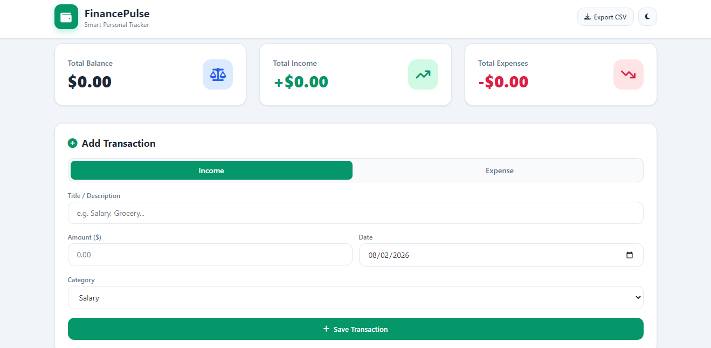
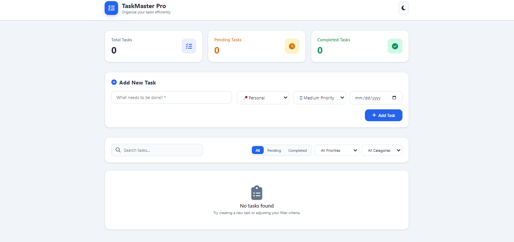
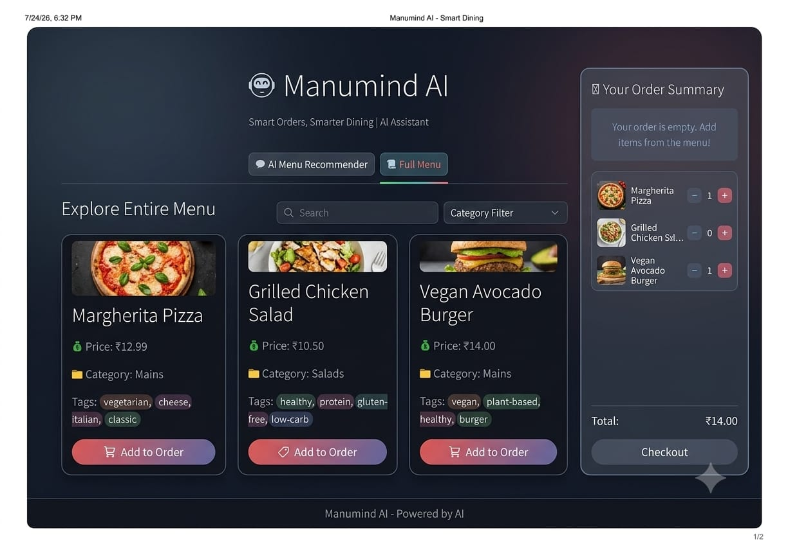

Featured Projects
Explore some of my recent web development projects and live demonstrations.

FinancePulse - Personal Expense Tracker Application
FinancePulse is a personal finance management web application engineered for seamless expense tracking and budget visualization. Featuring Interactive breakdown charts, dynamic transaction filtering, budget threshold alerts, and real-time balance calculations, it provides users with an actionable overview of their daily financial health across desktop and mobile devices.


MenuMind AI - Smart AI Menu & Dining Assistant Application
An AI-powered digital menu web application built with pyhton, streamlit and json. Features natural-language dish search, structured JSON data management, and Interactive Streamlit dietry filters designed for lightweight rapid web deployment.